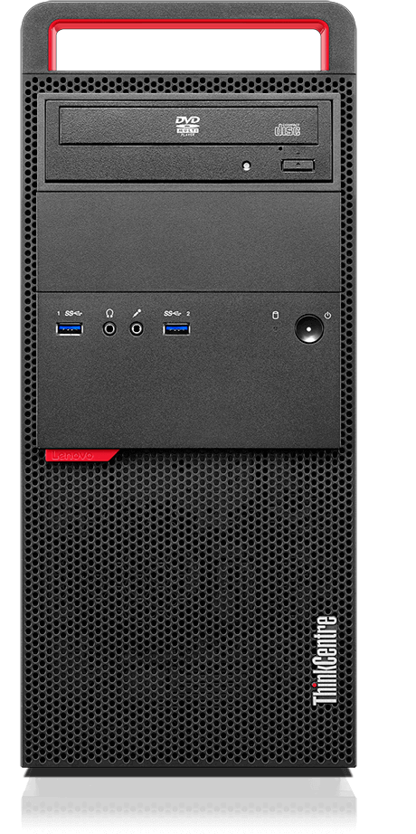
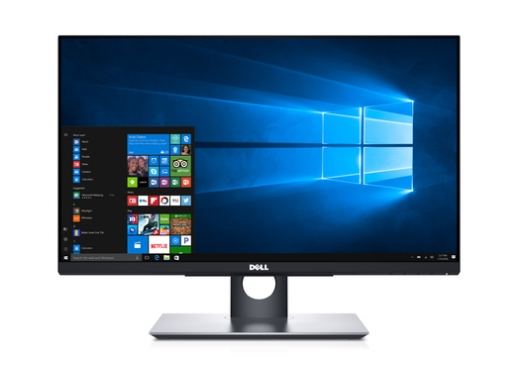
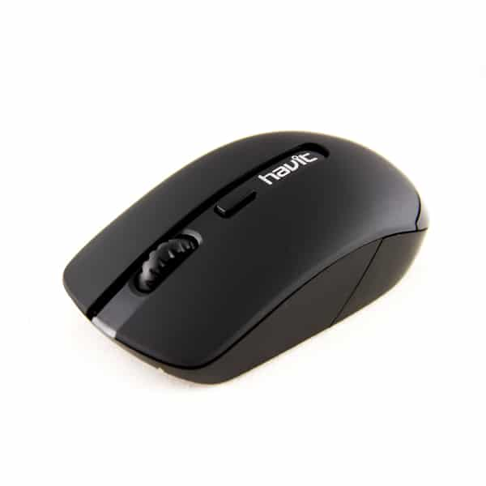
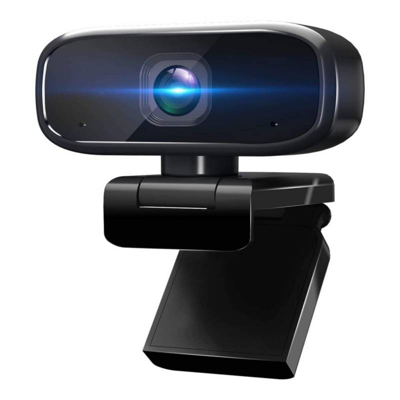
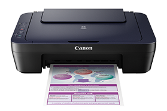
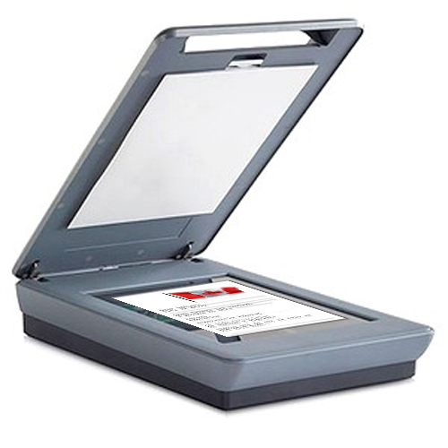

TORRE
|  |
El gabinete de una computadora es la pieza encargada de proteger las partes que componen a la CPU, este elemento recibe distintos nombres, por lo que también se le conoce como caja, carcasa, chasis o torre de computadoras. TIPOS DE GABINETE: Barebone. Mini torre. Sobremesa. Media torre o semitorre. Torre. Servidor. Rack. Portátil. Integrado en la pantalla. |
MONITOR
|  |
En informática, un monitor, también llamado pantalla, monitor de ordenador y monitor de computadora, es el principal dispositivo de salida, que muestra datos o información a todos los usuarios. También puede considerarse un periférico de entrada/salida si el monitor contiene pantalla táctil. Para monitores CRT la medida en pulgadas de la pantalla toma como referencia los extremos del monitor teniendo en cuenta el borde, mientras que el área visible es más pequeña. Tipos de monitores CRT, LCD, PDP, TFT LCD, LED, QLED, OLED, AMOLED, Super AMOLED, |
TECLADO
 |
Dispositivo de entrada que utiliza una disposición de teclas, para que actúen como interruptores electrónicos que envían información a la computadora. Tipos de teclado en función de su diseño Teclados de membrana Tipos de teclado en función de su conexión Por cable (USB)
QWERTY |
MOUSE
|  |
Dispositivo de entrada para ingresar órdenes a la computadora, está usualmente diseñado con dos botones: el izquierdo sirve para ejecutar acciones de activar, desplazar y acceder, entre otras; el botón derecho se utiliza principalmente como atajo a menús. TIPOS DE MOUSE: Ratón mecánico Ratón óptico Ratón inalámbrico |
DISPOSITIVOS
|  |  |  | ||
|
WEBCAM Se conecta al puerto USB, |
IMPRESORA Es un dispositivo periférico de salida del ordenador que permite producir una gama permanente de textos o gráficos de documentos almacenados en un formato electrónico, imprimiéndolos en medios físicos, normalmente en papel, utilizando cartuchos de tinta o tecnología láser (con tóner). Se conecta al puerto USB, |
SCANNER tradicional doméstico. Invención de hardware administrado por un software que permite reproducir en la pantalla de la computadora u otro equipo informático un documento impreso. Se conecta al puerto USB, |